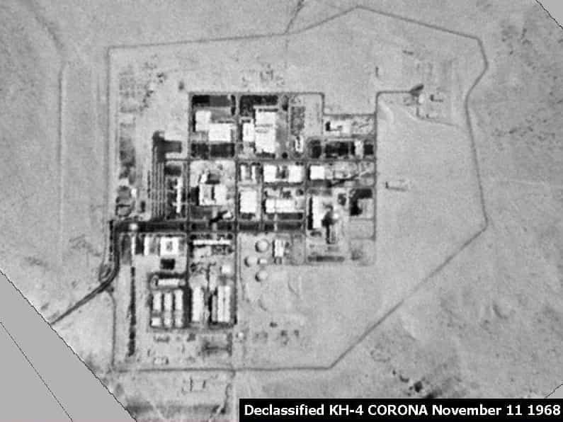

Some consider nuclear weapons a curse, and I concur. Others say nuclear deterrence has helped keep the peace. Still, there are some obvious problems. At least twice, false positive radar readings nearly started doomsday, largely unbeknownst to the public. Also, deterrence obviously works only with rational actors, unlike emerging pests such as North Korea. Unfortunately, one of America’s closest allies is one such problem.
Israel’s precarious geopolitical situation

These confrontations often don’t end well.
Israel, surrounded by Muslim countries, has a land mass and population slightly less than New Jersey. Relations have been strained by sporadic warfare since the beginning, leaving the Arab public seething with hatred. Their leaders are somewhat less hostile, but not enough for normal, neighborly international relations.
There’s a grim historical precedent here. In 1099, the First Crusade—a rather late reaction to Muslim expansionism—established the Kingdom of Jerusalem. In 1187, it was largely overrun, surviving only in southern Lebanon. In 1291, it was obliterated completely. All that would’ve happened sooner if the Arabs had been more unified. The Islamic caliphate then expanded further, until reaching a terminal decline.
The Israeli leadership is well aware of what’s at stake. They maintain a well-funded modern military. They’ve had the draft since the beginning, even for women; a pretty extreme measure, though justifiable in their case. The Palestinian territories are mostly walled off, which has gone far to curtail the endless spit-in-your-eye war they’ve suffered since day one.
Further, intense lobbying has gained them proxies in the American government, and they’ve done much to destabilize neighboring regimes. For example, I’m not shedding any tears for Saddam, but there was more to the Gulf Wars than Kuwait’s independence or even promoting democracy. Senator Fritz Holdings said in 2003:
The truth is, I thought the Israeli intelligence was really furnishing all of this information and that we were going in this time for our little friend Israel. Instead of them being blamed, we could finish up what Desert Storm had left undone; namely, getting rid of Saddam and getting rid of nuclear [arms] at the same time.
Be all that as it may, Israel’s ace up their sleeve is their nuclear capability.
Israel’s nuclear program

The nuclear weapons plant at Dimona: here’s what you can see
PM Ben-Gurion made Israel’s nuclear ambitions a priority since the beginning. According to Peter Pry’s 1986 book Israel’s Nuclear Arsenal, they studied from the masters. Fifty six Israeli scientists were trained at Oak Ridge in Tennessee and the Argonne National Laboratory in Illinois. Israel’s first reactor was the Soreq Nuclear Research Center, designed in 1956 by American Architect Philip Johnson. According to Pry, the USA supplied this effort with fifty kilograms of enriched uranium. This is just a research facility, but all the experience allowed the Israelis to pursue other goals.
With assistance from France, Israel created the Negev Nuclear Research Center near Dimona, which began construction in 1958 and went online around 1963. In fact, President Kennedy expressed some concern. JFK didn’t have much of a chance to follow up on this, for obvious reasons. Some consider this not to be a coincidence, but all that’s highly debatable.
The Dimona facility contains six secret basement levels for arms production under the Institute 2 lab. The elevators are located by the cafeteria, behind a wall to fool the American inspectors visiting in the 1960s. Below ground is the real control room, not the Potemkin Village version the inspectors saw. It’s estimated that the Dimona facility produces 40 kilos of plutonium annually, as well as enriched uranium. Lithium, deuterium, and tritium (used in the ignition sequence of H-bombs) are its other products. Estimates in 1986 put Israel’s arsenal at 100-200 nukes.
We wouldn’t know about these details if not for the revelations of Mordechai Vanunu, a former worker at the Dimona facility. Before he lost his job in 1985, he snuck in a camera and took over fifty pictures. The next year, he took his story to the Sunday Times in Britain. Unfortunately for him, he got taken in by a “honey trap”, then was drugged and abducted. After the Mossad took him back to Israel, he was imprisoned for eighteen years, eleven of which were in solitary confinement. At least it’s better than what Julius and Ethel Rosenberg got, back in the day.
Israel has never signed the Non-Proliferation Treaty; I’ll have to give them credit for honesty. By now, top Israelis have admitted what everyone knows, yet strategic ambiguity—the “maybe we have ’em, maybe we don’t” game—still serves a purpose. Specifically, American law has strings attached to foreign aid, and developing nukes is a no-no. If the international community includes two hundred rowdy kids in a playground, nine of whom have grenades in their backpacks, then it doesn’t make sense to let more of them have grenades.
Israel is a very large recipient of American foreign aid. (In 2017, they’ll get $3.1 billion, a lavish racket for our industrialized “51st State” that’s gone on for decades. Meanwhile, Mexico gets just under $135 million, largely toward combating the drug trade.) In fact, the US government has been sued to try to get them to enforce their own rules, which most people aren’t aware of unless they read the Israeli press.
The Samson Option
Israel’s weapons delivery systems include fighter-bombers, with the Tel Nof air base being a likely depot. Further, the Jericho III ICBM has an estimated maximum range of 11,500km. Their navy includes Dolphin-class submarines capable of launching missiles.
The Israelis intend to use nuclear weapons if their country is in danger of losing a war. During 1973’s Yom Kippur War, this nearly came to pass. Things were looking pretty dicey, so they notified Henry Kissinger that his boss had better send aid, or else. Nixon complied, sending a massive airlift to Israel’s defense, saving the day.
Israeli attitudes tend to go beyond a wish for self-defense:
Twenty, thirty atomic bombs on Berlin, Munich, Hamburg, Nuremberg, Cologne, Frankfurt, Stuttgart, Dresden, Dortmund and so on to assure the job gets done. And the land will be quiet for a thousand years.
—Chen Ben-Eliyahu
As it happens, Germany sold them their new submarines. That’s par for the course for today’s German leadership. Consider also the following:
If left to its own Israel will have no choice but to fall back on a riskier defense which will endanger itself and the world at large… To enable Israel to abstain from dependence on nuclear arms calls for $2 to 3 billion per year in U.S. aid.
—Economic advisor Amos Rubin
We possess several hundred atomic warheads and rockets and can launch them at targets in all directions, perhaps even at Rome. Most European capitals are targets for our air force. Let me quote General Moshe Dayan: ‘Israel must be like a mad dog, too dangerous to bother.’… We have the capability to take the world down with us. And I can assure you that that will happen before Israel goes under.
—Martin van Creveld
You Americans screwed us in not supporting Israel in its 1956 war with Egypt… We can still remember the smell of Auschwitz and Treblinka. Next time we’ll take all of you with us.
—Israeli official quoted in The Samson Option
Will cooler heads prevail? Let’s hope we don’t have to find out.
A plague on both their houses
The Israelis and Arabs should settle their quarrel like gentlemen and leave the rest of us out of it.
One hardly can fault Israel for wanting to defend themselves against hostile neighbors, but they certainly can be faulted for threatening to nuke countries elsewhere. Further, an all-out launch would devastate the entire world from fallout and nuclear winter. If they’re serious about this then “our little friend Israel” is as irrational as North Korea. (Why are these guys still getting American aid again?) Their leaders should consider the day after: who would take in any Israeli survivors if they did this?
As much as I dislike Muslim terrorism, it has a couple of advantages over the Israeli kind. At least they’re not out to nuke the world if they don’t get their way. Further, they don’t pretend to be our friends while playing us for chumps.
Really, Israel has a lot going for it; they should get back to that. If their mission is to be a light unto the nations, then it’s time to start acting the part.
Read More: Is Antisemitism Genuine Bigotry Or A Practical Counterdefense Against A Powerful Tribe?